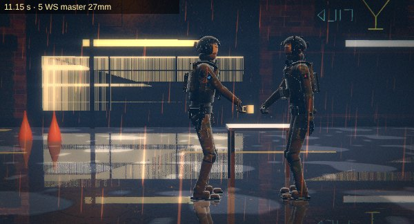

The scene, as written

BOARD draws each shot of its shot list from MIMATIC's camera, with the people as LEGEND and CHOREO perform them, in pencil: movement in blue, the camera in red. Below, the floor plan from above.
One sheet per engine and version: what it studied, pictures of what it does now, and its exam measured on its own output. Below them, three scenes made end to end.